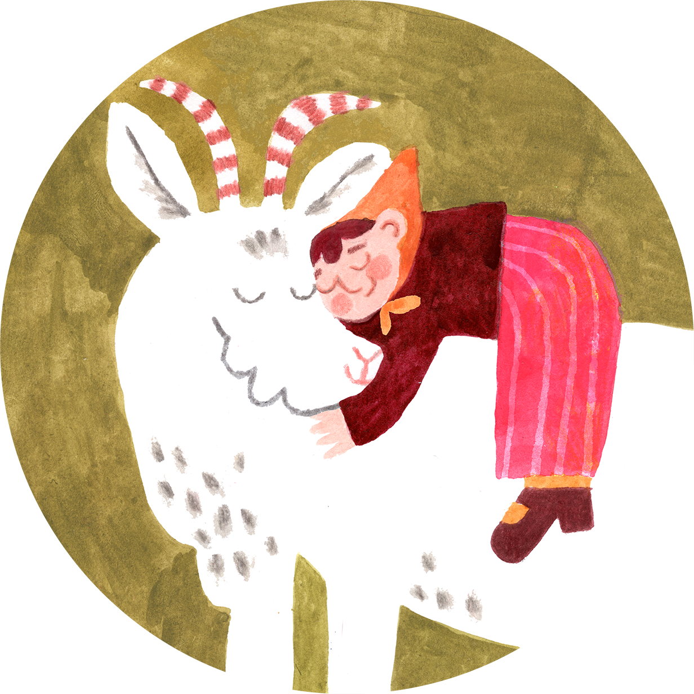
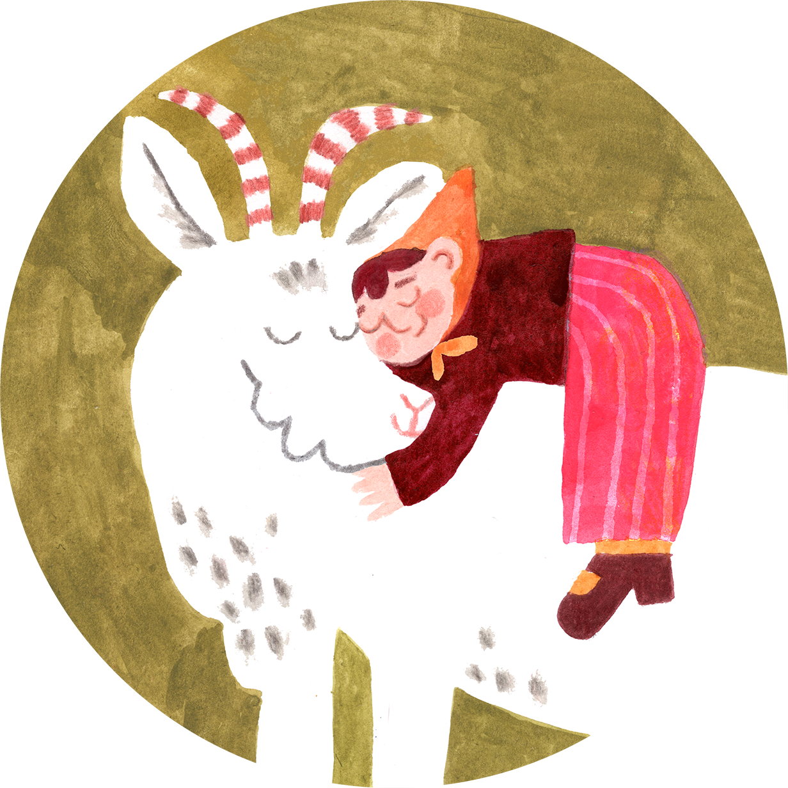

Przedszkole Na Kozie
illustrations made for a waldorf kindergaten in Cracow.
The kindergarten will be focused on developping a strong connection between children and nature. They will learn how to take care of a garden, go to the forest to play.
in my illustrations, I tried to capture the bliss of nature, as well as the love between the titular goat and a preschooler.